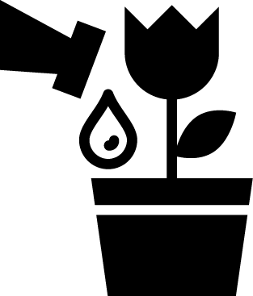

La huerta en el hogar
Las huertas orgánicas son espacios de tierra donde se realiza el cultivo de vegetales, legumbres, plantas medicinales y árboles frutales. Su producción, está basada en el respeto de los procesos naturales de los alimentos que se siembran, valiéndose de fertilizantes naturales.
Muchas veces escuchamos hablar de los productos orgánicos y la cantidad de beneficios que éstos poseen y nos brindan para la alimentación, mejorando así nuestra calidad de vida y la de nuestra familia. Al respecto, en esta oportunidad nos referiremos a la huerta orgánica, una forma natural y económica de producir alimentos sanos durante todo el año sin utilizar agroquímicos.
Para cultivar nuestros propios vegetales no hace falta vivir en el campo o tener un jardín muy grande. Cualquier lugar es apto, siempre que tenga seis horas diarias de sol directo (como mínimo), un buen suelo (limpio de basuras o malezas), bien aireado y con la cantidad de nutrientes naturales necesarios, al cual se le pueda incorporar abono compuesto periódicamente. Lo recomendable es comenzar con una superficie pequeña de 2 o 3 metros e ir agrandándola de acuerdo a las necesidades de cada uno. Si usted va a armar una huerta en macetas, le aconsejamos que éstas tengan una altura de 30cm para las hortalizas de hoja y de 50cm para las de fruto y raíz. El material de las mismas puede ser variado, como plástico, metal, cemento, fibrocemento, cerámica o cualquier otro que desee, pero nunca hay que olvidarse de brindarles las mejores condiciones para que puedan desarrollarse y crecer bien en ese espacio, ya que no tienen la posibilidad de explorar más suelo en busca de agua, aire y nutrientes.
Para tener en cuenta
Cuidados ante las plagas
Para el control de plagas y enfermedades en la huerta orgánica lo fundamental es la prevención. Dando así a las plantas las condiciones necesarias para que se fortalezcan y se tornen más resistentes.
Riego
Está muy relacionado con la ubicación de las huertas orgánicas. La cantidad de horas de sol directo que reciben, el estado del suelo, drenaje y especies plantadas. No obstante, es posible generalizar y de acuerdo a la estación del año el riego será diferente
Especies
Al momento de realizar la acción, se deberá tener en cuenta que algunos cultivos se siembran directamente en la tierra. En la mayoría de los casos, es aconsejable sembrar en almácigos (semillas pequeñas) o en macetas individuales (semillas grandes) para luego llevar los plantines a los canteros.
Salud
La huerta orgánica es garantía de alimentos sanos, naturales y llenos de nutrientes. Al mismo tiempo, son fuente de satisfacción personal, alegría y bienestar.